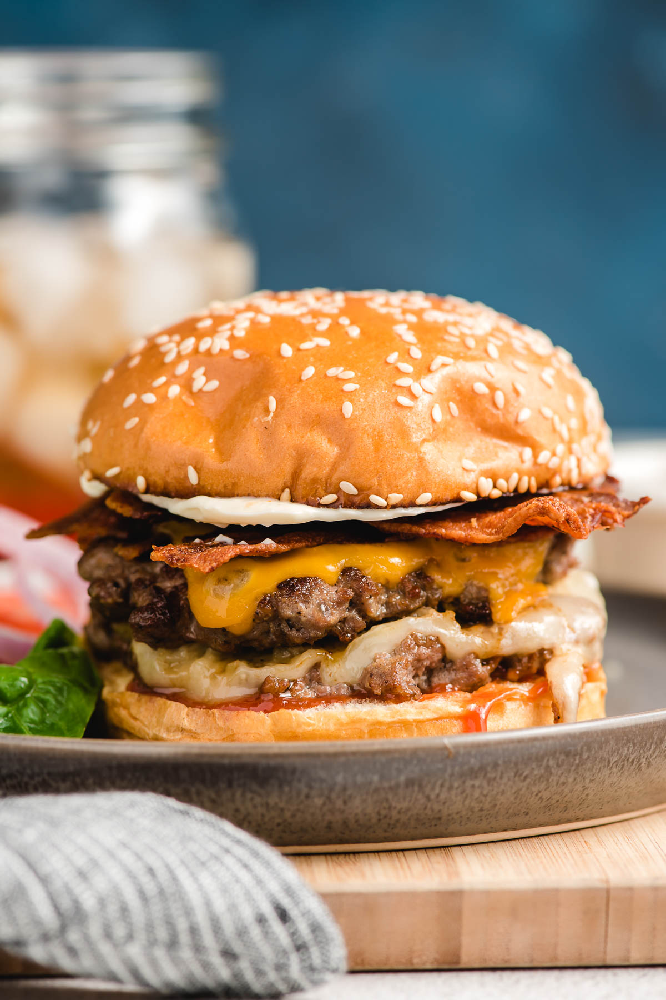
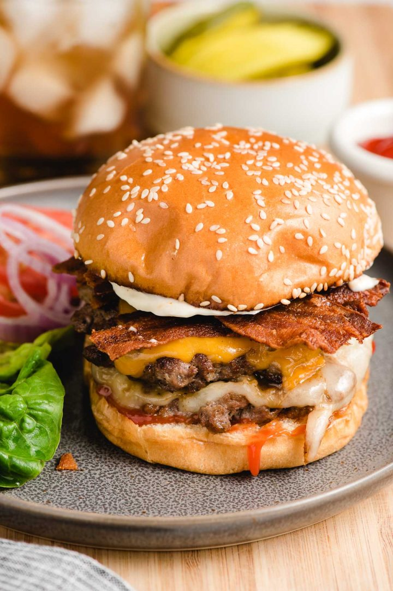

Double Cheese Double Bacon Cheeseburger

Description
Our Bacon Cheeseburger recipe is a classic American favorite. This recipe features a juicy beef patty, crispy bacon, and melted cheddar cheese.
Ready in 30 minutes, this easy homemade burger recipe is perfect for a weeknight dinner.
Ingredients
Steps
- Form beef into patties
- Season patties with salt and pepper
- Heat pan add oil
- Cook both patties
Add Cheddar, and Swiss slices on the final flip.
- Cook bacon
- Toast buns
- Put toppings on buns
- Assemble burger
- Enjoy!

Home